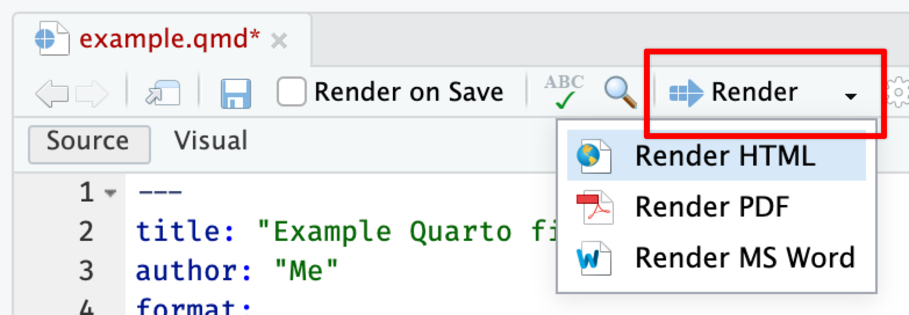

| Breed | 2013 Rank | 2014 Rank | 2015 Rank | 2016 Rank | 2017 Rank | 2018 Rank | 2019 Rank | 2020 Rank |
|---|---|---|---|---|---|---|---|---|
| Retrievers (Labrador) | 1 | 1 | 1 | 1 | 1 | 1 | 1 | 1 |
| French Bulldogs | 11 | 9 | 6 | 6 | 4 | 4 | 4 | 2 |
| German Shepherd Dogs | 2 | 2 | 2 | 2 | 2 | 2 | 2 | 3 |
| Retrievers (Golden) | 3 | 3 | 3 | 3 | 3 | 3 | 3 | 4 |
Class 2: Data manipulation basics
Slides
The slides are available online as an HTML file. You can also download them in a static PDF (for printing or storing for later). You can also click in the slides below and navigate through them with your left and right arrow keys.
Readings
- Chapters 3 and 5 in Wickham, Çetinkaya-Rundel, and Grolemund (2023)
Assignment
Note
IMPORTANT: This looks super long and like a lot of work, but it’s mostly repeating and applying things we’ve seen in the lecture. Much of it is just reading along.
Remember, if you’re struggling, please talk to me. Otherwise I can’t know. Work with classmates too. Don’t suffer in silence!
Getting started
You’ll be doing all your R work in Quarto this time (and from now on). You should use an RStudio Project to keep your files well organized (either on your computer or on Posit.cloud). Either create a new project for this exercise only, or make a project for all your work in this class (revisit the guide on Rprojects for a refresher).
You’ll need to download these two CSV files and put preferably put them in a folder named data in your project folder:
Create a quarto file for your assignment. Use separate code chunks for each task and explain before each code chunk what the task was.
In the end, the structure of your project directory should look something like this:
your-project-name
├── data
│ ├── breed_rank.csv
│ └── breed_traits.csv
├── your-project-name.Rproj
└── your-name_problem-set-2.qmdThe data we’re using for today’s workshop comes from #TidyTuesday, a weekly social data project based on the tidyverse ecosystem. The GitHub repo hosts many interesting data sets to practice with, and this particular data set comes from the American Kennel Club.
The first data set, breed_rank, lists the popularity rankings over time for 195 different dog breeds (many of the snippets shown throughout are truncated for the purposes of display).
breed_rank
The second data set, breed_traits, has information on 16 different traits, classified from 1 to 5, for those 195 dog breeds.
breed_traits
| Breed | Affectionate With Family | Good With Young Children | Good With Other Dogs | Shedding Level |
|---|---|---|---|---|
| Retrievers (Labrador) | 5 | 5 | 5 | 4 |
| French Bulldogs | 5 | 5 | 4 | 3 |
| German Shepherd Dogs | 5 | 5 | 3 | 4 |
| Retrievers (Golden) | 5 | 5 | 5 | 4 |
Read the data
It is good coding practice to load all required packages at the top of your quarto file (but below the yaml header), in a separate codechunk. For this problem set, you’ll need to load only the tidyverse package. Make a code-chunk in which you read the data, using the read_csv() function from the readr package (loaded as part of the tidyverse!).
Remember that you can run an entire chunk by clicking on the green play arrow in the top right corner of the chunk. You can also run lines of code line-by-line if you place your cursor on some R code and press ⌘ + enter (for macOS users) or ctrl + enter (for Windows users).
Make sure you run each chunk sequentially. If you run a chunk in the middle of the document without running previous ones, it might not work, since previous chunks might do things that later chunks depend on.
Clean the data
Check the names of the data sets, using the names() function
Per the tidyverse style guide, variable names should use snake case—lower case with underscores between words. This helps with consistency and readability, but it’s also technically easier, as any variable names that start with numbers and/or have spaces need to be referred to within `back ticks`. It’s easier to refer to a variable with shedding_level instead of `Shedding Level`, and thankfully we have a function to easily rename all of those variables instead of doing it by hand.
Unfortunately…that function does not live within the tidyverse! It’s the only such function we’ll be highlighting during this workshop, but it is so helpful that it has to be included. The function comes from the janitor package. Use the console to install the package (remember, this needs to be done only once per computer!). Alternatively, you can also use the “Packages” panel in RStudio to install it. Load the package in the same way you loaded the tidyverse package before.
library(janitor)Copy-paste the code below into your quarto file. In the code, the first line uses the assignment operator <- to “save as” our breed_traits data set. We could give it another name and save it as something else, but for this purpose we’re going to overwrite it. The second line applies the clean_names() function.
Note!
A helpful tip on notation: once a package has been loaded with library, you can use the function by itself, like you see here with clean_names(). If you don’t want to load the package, you can eliminate that line and instead refer to the function along with its package name, such as janitor::clean_names(). (The package still has to be installed, however.)
breed_traits <- breed_traits |>
clean_names()The clean_names() function neatly converts all variable names to snake case, as shown below.
| breed | affectionate_with_family | good_with_young_children |
|---|---|---|
| Retrievers (Labrador) | 5 | 5 |
| French Bulldogs | 5 | 5 |
Manipulate the data using dplyr
Use group_by(), summarize() and n() on the cleaned (!) breed_traits data frame to find out how many observations there are per different value of shedding_level.
Your output should look like this:
# A tibble: 6 × 2
shedding_level n
<dbl> <int>
1 0 1
2 1 27
3 2 41
4 3 109
5 4 16
6 5 1For this kind of easy summary, there is even a built-in dplyr function that achieves the same result: count()
breed_traits |>
count(shedding_level)Note that this piece of code does not have an assignment operator! We are applying the count() function to the breed_traits data set, but the results would appear in your console and would not be saved anywhere. This is useful whenever you don’t need to save the output.
The output suggests that 109 breeds have a value of 3, 41 breeds have a value of 2, etc. Unfortunately, we have a value of zero, and we know that these variables should have a value of 1, 2, 3, 4, or 5. This is likely an error in the data that should be removed.
Use the filter() function, which keeps or discards observations (rows), to remove all records with a shedding_level value of zero (and we know from our count() output above that there should be only one such observation). As above, overwrite the breed_traits data frame with the new, filtered version.
You can check if your operation was successful by running breed_traits |> count(shedding_level) again: You should now see that zero is no longer a value of that variable.
Let’s make a combined score of how untidy each of the dog breeds is and use three variables for that score: shedding_level, coat_grooming_frequency and drooling_level. Since those traits are classified from 1 to 5 for each breed, with a higher score denoting a higher level of untidiness, we can add up the scores for all three traits to create a new variable. Use the mutate() function to create a new variable, untidy_score, which is the sum of our three traits of interest. Store the results in a new data frame called untidy_scores (using the assignment operator <- ). Use the select() function, another dplyr verb, to only select two variables into this new data frame: untidy_scores and breed
The new data set now consists of the untidy_score for 194 breeds (we had 195 until we dropped the Plott Hounds) and looks like this:
| breed | untidy_score |
|---|---|
| Retrievers (Labrador) | 8 |
| French Bulldogs | 7 |
| German Shepherd Dogs | 8 |
| Retrievers (Golden) | 8 |
| Bulldogs | 9 |
The arrange() function can be useful to quickly sort your data set based on the value of any selected variable(s). arrange() defaults to ascending order, but you can specify descending order by wrapping the variable name within desc(), as seen in the code on the right. Try to order the data frame such that the untidiest breed is on the top, and the tidiest on the bottom.
The result should look like this:
| breed | untidy_score |
|---|---|
| Bernese Mountain Dogs | 11 |
| Leonbergers | 11 |
| Newfoundlands | 10 |
| Bloodhounds | 10 |
| St. Bernards | 10 |
| Old English Sheepdogs | 10 |
Tidying the data
We now know that Bernese Mountain Dogs are among the untidiest of all: they have the highest score of 11. So far, we’ve been working with the breed_traits data, but we have a whole other data set, breed_ranks, showing the popularity of different breeds across several years.
| Breed | 2013 Rank | 2014 Rank | 2015 Rank | 2016 Rank | 2017 Rank | 2018 Rank | 2019 Rank | 2020 Rank |
|---|---|---|---|---|---|---|---|---|
| Bernese Mountain Dogs | 32 | 32 | 29 | 27 | 25 | 22 | 23 | 22 |
Remember from the class that the tidyverse is opinionated on the topic of tidy data. How does this this data set fail to meet the criteria for tidy data? Explain.
There are three interrelated rules which make a dataset tidy:
1. Each variable must have its own column.
2. Each observation must have its own row.
3. Each value must have its own cell.
We have a year and a rank variable, but neither of these variables have their own column. Shown above is one observation, by dog breed. But that "one" observation is actually eight separate observations: the rank in 2013, the rank in 2014, etc. Each observation needs to have its own row.The current structure of breed_ranks is in a wide format, and we need it to be in a long format. Create a new data frame called ranks_pivoted based on breed_rank. Use pivot_longer() to create two new variables, year and rank. Remember that the function has three arguments: the columns we want to pivot (remember we need to use back ticks because these variable names have spaces in them), the name for the new column consisting of the previous column headers, and the name for the new column consisting of the previous column values.
The output should look like below. This data is now tidy, with each observation (e.g., the rank in 2013) in its own row and separate columns for each variable.
| Breed | year | rank |
|---|---|---|
| Bernese Mountain Dogs | 2013 Rank | 32 |
| Bernese Mountain Dogs | 2014 Rank | 32 |
| Bernese Mountain Dogs | 2015 Rank | 29 |
| Bernese Mountain Dogs | 2016 Rank | 27 |
| Bernese Mountain Dogs | 2017 Rank | 25 |
| Bernese Mountain Dogs | 2018 Rank | 22 |
| Bernese Mountain Dogs | 2019 Rank | 23 |
| Bernese Mountain Dogs | 2020 Rank | 22 |
Let’s do some more cleaning. The rename() function makes it easy to change the names of variables (the new name comes first, followed by the original)—we can change Breed to breed to match our other data set. And the parse_number() function from readr allows us to pull out the integer from our year column. This is an example of how you can use mutate() to rewrite existing variables in addition to creating new ones. Just copy-paste this code into your project.
ranks_pivoted <- ranks_pivoted |>
rename(breed = Breed) |>
mutate(year = parse_number(year))| breed | year | rank |
|---|---|---|
| Bernese Mountain Dogs | 2013 | 32 |
| Bernese Mountain Dogs | 2014 | 32 |
| Bernese Mountain Dogs | 2015 | 29 |
| Bernese Mountain Dogs | 2016 | 27 |
| Bernese Mountain Dogs | 2017 | 25 |
| Bernese Mountain Dogs | 2018 | 22 |
| Bernese Mountain Dogs | 2019 | 23 |
| Bernese Mountain Dogs | 2020 | 22 |
Okay but..what was that all that tidying good for?
Imagine you have this research question: How has the popularity ranking of Bernese Mountain Dogs has shifted over time? Our mew, appropriately tidy data allows us to plot an answer to that question. You haven’t learned how to make plots with R yet, but there are some explanations to accompany the example below.
First, we want to filter() our data, because we’re only interested in Bernese Mountain Dogs, and our new ranks_pivoted data frame contains all the breeds, the code below starts with a filter() statement. You could use filter(breed == "Bernese Mountain Dogs"), but perhaps you don’t want to type all that out. The stringr package (part of the core tidyverse) has many functions for dealing with string (text) data, and str_detect() is among the most useful. It returns TRUE or FALSE as to whether the variable you select (the first argument of the function) contains the string you provide (the second argument of the function). This function within a function will filter to only the observations for which our str_detect expression is TRUE. Use a combination of filter() and str_detect() to reduce the data set to only Bernese Mountain Dogs.
The ggplot function assigns year to the x-axis and rank to the y-axis. The label = rank argument indicates that we want the rank variable to appear as a label. Then, to define the plot, we add a geom_point layer for dots as well as a geom_text layer to add the labels. The vjust argument within that function specifies the desired vertical justification for the labels to place them below the dots. Copy-paste the code below into your project.
ranks_pivoted |>
ggplot(aes(x = year, y = rank, label = rank)) +
geom_point(size = 3) +
geom_text(vjust = 2)More on plots next week. That’s it, time to render your assignment, either as a .pdf or a .html file. Use the “Render” menu:

Upload the rendered document in the Homework section on Moodle, under “Assignment 2”.
üéâ Party! üéâ
Solution
References
Wickham, Hadley, Mine Çetinkaya-Rundel, and Garrett Grolemund. 2023. R for data science: import, tidy, transform, visualize, and model data. 2nd edition. Beijing Boston Farnham Sebastopol Tokyo: O’Reilly. https://r4ds.hadley.nz/.